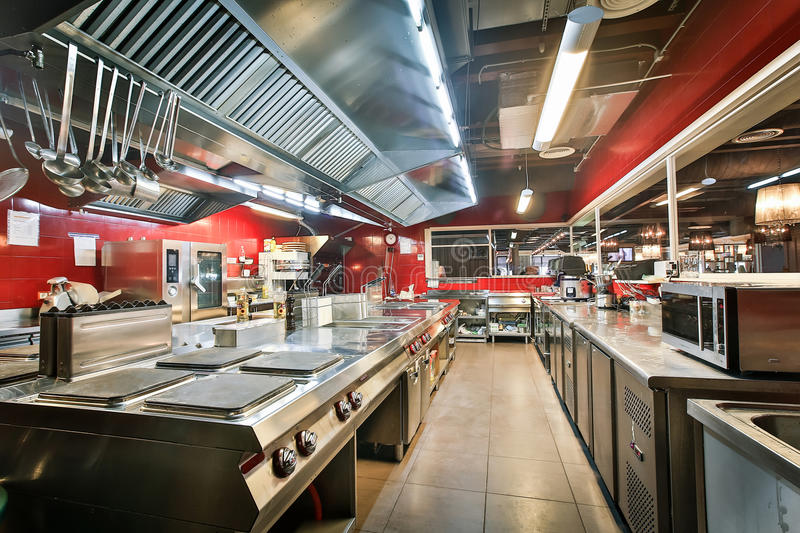
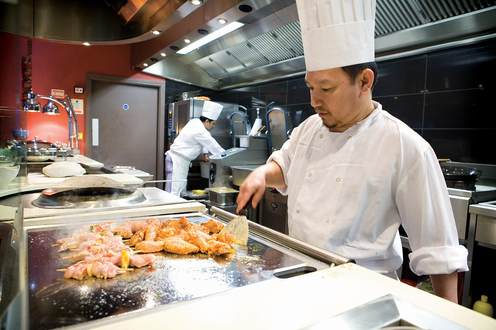

Ресторан «Жизнь», расположившийся в центре города, приглашает Вас почувствовать себя настоящим аристократом и отведать вкуснейшие блюда русской, европейской и кавказской кухонь. Помимо вкусных и доступных по цене блюд и напитков по пятницам и субботам Вас ждет приятное музыкальное сопровождение.
Атмосферу непринужденности, располагающую к отдыху, создают эффектный, но в то же время ненавязчивый и приятный глазу интерьер, выдержанный в классическом стиле: мягкие диваны и кресла, массивные столы. В декоре преобладают спокойные оттенки бежевого и коричневого цветов. Расположиться Вы можете в основном зале или на невысоком подиуме. Для Вас так же работают три оригинальных зала, каждый из которых оформлен в особенном цвете, с вместимостью до 15 человек.
Повод прийти сюда может быть самый разный: будь то деловая встреча, романтическое свидание, корпоративное мероприятие или семейный праздник - неповторимая атмосфера благородства, гостеприимства и доброты сделает визит в "Жизнь" незабываемым. Здесь каждому обеспечен радушный, почти домашний прием.

